AT第十一轮
#1 AT第十一轮 作者：无尽 发表时间：2009-8-13 15:04:50
中村茂 - Taimla Tunnet
曹冬 - Sushkov Vladimir
Purk Andry - Karasyev Maxim
冈部宽 - Nykl Ondřej
陈科翰 - Kozhin Mikhail
小野孝之 - 吴镝
#2 Re:AT第十一轮 作者：水月 发表时间：2009-8-13 15:06:36
这就开始了？#3 Re:AT第十一轮 作者：无尽 发表时间：2009-8-13 15:11:37
=======上图对应的爱五子棋谱代码如下，以便你拆解：========
h8h9h6i9
======================================================
冈部 - Nykl
#4 Re:AT第十一轮 作者：无尽 发表时间：2009-8-13 15:13:56
=======上图对应的爱五子棋谱代码如下，以便你拆解：========
h8h9j9g8
======================================================
Taimla - 中村
#5 Re:AT第十一轮 作者：无尽 发表时间：2009-8-13 15:15:12
我买中村胜#6 Re:AT第十一轮 作者：水月 发表时间：2009-8-13 15:18:55
中村是黑还是白#7 Re:AT第十一轮 作者：舍露里 发表时间：2009-8-13 15:28:52
刚才我看到了一个酷酷的背影急匆匆地走进赛场，看来是小苏来了
#8 Re:AT第十一轮 作者：舍露里 发表时间：2009-8-13 15:31:27
曹冬开了花月，6打
小苏放了最强的白4，曹冬终于执黑了
#9 Re:AT第十一轮 作者：水月 发表时间：2009-8-13 15:40:13
上几张曹和苏的照片吧～#10 Re:AT第十一轮 作者：无尽 发表时间：2009-8-13 15:46:46
=======上图对应的爱五子棋谱代码如下，以便你拆解：========
h8h9j9g8f7g7g6g10i8h7f9
======================================================
老变化啊，中村白
#11 Re:AT第十一轮 作者：舍露里 发表时间：2009-8-13 15:47:55
苏的外套引人遐想
不知道他上哪遛达去了，一会儿补上
#12 Re:AT第十一轮 作者：无尽 发表时间：2009-8-13 15:48:21
=======上图对应的爱五子棋谱代码如下，以便你拆解：========
h8h9j9i7g7j8h6i9
======================================================
小野 － 大鱼（白）
#13 Re:AT第十一轮 作者：堂堂 发表时间：2009-8-13 15:48:54
曹东有的考虑考虑了，那个山月变化小苏应该很熟了
#14 Re:AT第十一轮 作者：屏蔽 发表时间：2009-8-13 15:49:12
中村又准备受虐了？
浙江赛的时候海月公布这个黑必胜了XD
#15 Re:AT第十一轮 作者：无尽 发表时间：2009-8-13 15:50:08
楼上，哪一手开始必胜？
#16 Re:AT第十一轮 作者：堂堂 发表时间：2009-8-13 15:51:36
=======上图对应的爱五子棋谱代码如下，以便你拆解：========
h8h9i9i8j7o1j6n1i7m1j10l1k6j1i6i1
======================================================
还有更好些的5走么
#17 Re:AT第十一轮 作者：无尽 发表时间：2009-8-13 15:53:25
=======上图对应的爱五子棋谱代码如下，以便你拆解：========
h8h9i9i8k6
======================================================
曹冬 黑
Sushkov 白
#18 Re:Re:AT第十一轮 作者：屏蔽 发表时间：2009-8-13 15:56:05
引用：
原文由 无尽 发表于 2009-8-13 15:50:08 :
楼上，哪一手开始必胜？
忘了，太深奥了我当时没能理解
老定式中途变了一手，上面稳一点白棋攻不下来，下面防不住了，基本思路是让白棋不能借用上面的一点优势吧。
不过说来坦克变招了啊。
#19 Re:AT第十一轮 作者：舍露里 发表时间：2009-8-13 15:57:44

#20 Re:AT第十一轮 作者：屏蔽 发表时间：2009-8-13 15:58:31
引用：还有更好些的5走么
=======上图对应的爱五子棋谱代码如下，以便你拆解：========
h8h9i9i8h7g10f11
======================================================
谈不上更好罢了
#21 Re:AT第十一轮 作者：水月 发表时间：2009-8-13 16:01:27
回19楼，网易引用的图看不见～#22 Re:AT第十一轮 作者：舍露里 发表时间：2009-8-13 16:03:04
#23 Re:AT第十一轮 作者：无尽 发表时间：2009-8-13 16:04:42
还是看不见 直接上传？
直接上传？
#24 Re:AT第十一轮 作者：水月 发表时间：2009-8-13 16:09:30
T T 看图不能。。。。。。#25 Re:AT第十一轮 作者：屏蔽 发表时间：2009-8-13 16:09:35
话说Sushkov成家了不［ 水月 于 2009-8-13 16:14:52 时花20金币送鲜花一朵］
#26 Re:AT第十一轮 作者：水月 发表时间：2009-8-13 16:09:55
屏蔽想嫁人了？咩哈哈～
#27 Re:AT第十一轮 作者：启蒙 发表时间：2009-8-13 16:10:47
呵呵。支持#28 Re:AT第十一轮 作者：深海鱼 发表时间：2009-8-13 16:12:30
屏蔽想嫁人了。。。
#29 Re:AT第十一轮 作者：舍露里 发表时间：2009-8-13 16:19:43
终于成功上传一张
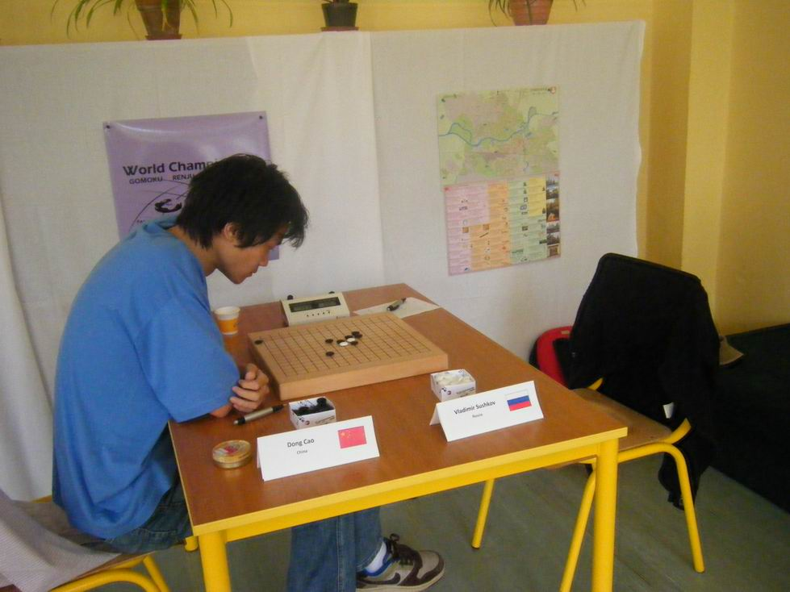
#30 Re:AT第十一轮 作者：舍露里 发表时间：2009-8-13 16:25:54
给苏来张大特写，可惜他还是全身照比较有魅力，一会儿等他遛达的时候我偷拍一张
#31 Re:AT第十一轮 作者：罔两 发表时间：2009-8-13 16:27:40
我汗，苏切打算把这个棋盘吃了吧。还是比较近视 凑这样近看棋子~~~~~~~
#32 Re:AT第十一轮 作者：舍露里 发表时间：2009-8-13 16:37:20
小苏不管是坐着还是站着还是走着，不管是正面还是侧面还是背面，都是那么深沉
#33 Re:AT第十一轮 作者：菜农 发表时间：2009-8-13 16:37:29
走棋了没？发几个棋谱看看啊！#34 Re:AT第十一轮 作者：水月 发表时间：2009-8-13 16:38:26
话说苏切今天刚刮的胡子么？#35 Re:AT第十一轮 作者：舍露里 发表时间：2009-8-13 16:40:09
牛仔马克西姆
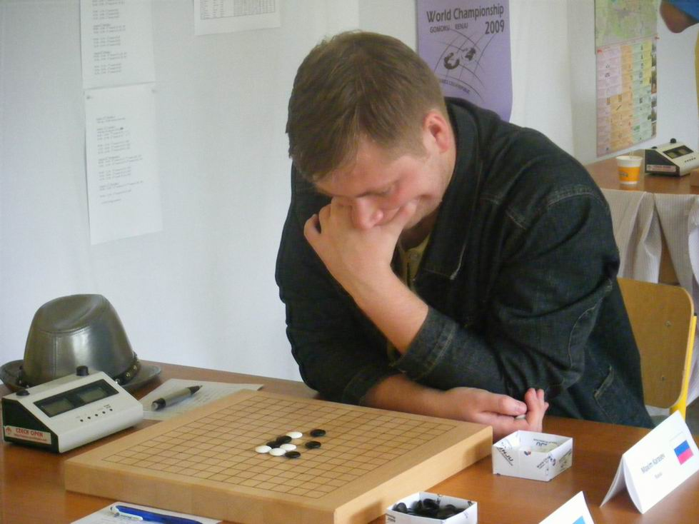
#36 Re:AT第十一轮 作者：yoda 发表时间：2009-8-13 16:42:13
大鱼的16最强防。
#37 Re:AT第十一轮 作者：海月 发表时间：2009-8-13 16:48:38
考必胜
#38 Re:AT第十一轮 作者：海月 发表时间：2009-8-13 16:51:32
曹冬这盘看起来很危险#39 Re:AT第十一轮 作者：aabb 发表时间：2009-8-13 17:02:04
#40 Re:AT第十一轮 作者：舍露里 发表时间：2009-8-13 17:04:41
大师的照片总是要拍的，这是他今天的造型
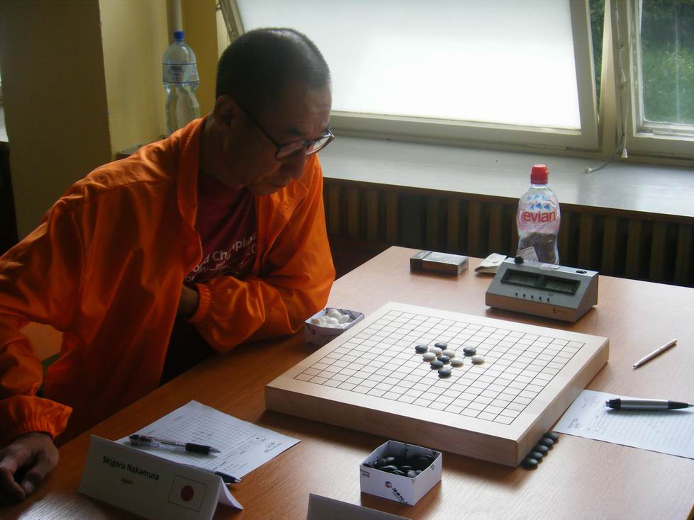
#41 Re:Re:AT第十一轮 作者：海月 发表时间：2009-8-13 17:09:08
#42 Re:AT第十一轮 作者：时景如飘风 发表时间：2009-8-13 17:09:09
好腐败，喝依云矿泉水#43 Re:AT第十一轮 作者：无尽 发表时间：2009-8-13 17:14:45
。。。。。。
#44 Re:AT第十一轮 作者：水月 发表时间：2009-8-13 17:15:39
哪里必胜了。。。。。。#45 Re:AT第十一轮 作者：海月 发表时间：2009-8-13 17:15:54
还没必胜吧
#46 Re:AT第十一轮 作者：无尽 发表时间：2009-8-13 17:17:14
yun，不是地毯 一眼看过去还挺兴奋
一眼看过去还挺兴奋
#47 Re:AT第十一轮 作者：海月 发表时间：2009-8-13 17:17:41
曹冬这棋黑白都有相当诡异的下法
#48 Re:AT第十一轮 作者：舍露里 发表时间：2009-8-13 17:21:15
曹冬 & 苏切
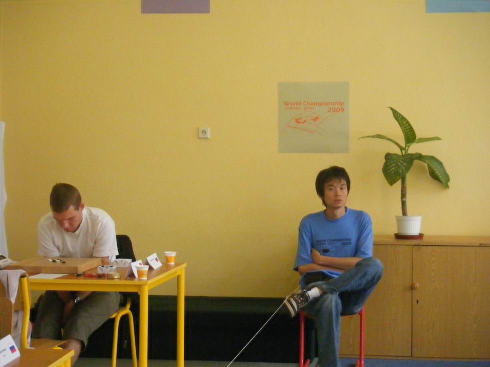
#49 Re:AT第十一轮 作者：舍露里 发表时间：2009-8-13 17:21:41
大鱼 & 小野
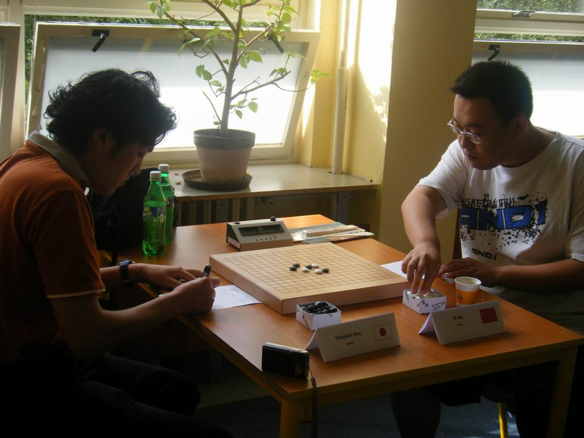
#50 Re:AT第十一轮 作者：aabb 发表时间：2009-8-13 17:21:44
感觉曹冬应该赢了。。
#51 Re:AT第十一轮 作者：水月 发表时间：2009-8-13 17:22:47
感觉这个棋我好像在QQ游戏经常看见～哈哈#52 Re:AT第十一轮 作者：网络连接 发表时间：2009-8-13 17:25:45
大鱼好可怜，人家那儿两瓶饮料，他面前就一杯一次性纸杯白开水，估计还是组委会免费提供的#53 Re:AT第十一轮 作者：海月 发表时间：2009-8-13 17:29:06
曹冬这盘棋还是有防点的，而且白棋还有很强的骗杀
#54 Re:AT第十一轮 作者：水月 发表时间：2009-8-13 17:33:50
中村那盘是不是白胜了。。。很像疏星某变化～#55 Re:AT第十一轮 作者：aabb 发表时间：2009-8-13 17:45:13
以曹冬的计算力应该没问题的。。
#56 Re:Re:AT第十一轮 作者：水月 发表时间：2009-8-13 17:47:07
引用：大鱼感冒了，那杯是热水
原文由 网络连接 发表于 2009-8-13 17:25:45 :
大鱼好可怜，人家那儿两瓶饮料，他面前就一杯一次性纸杯白开水，估计还是组委会免费提供的
#57 Re:AT第十一轮 作者：魔法少年 发表时间：2009-8-13 18:00:55
冬瓜必胜了。。。
#58 Re:AT第十一轮 作者：舍露里 发表时间：2009-8-13 18:03:07
大鱼那不是白开水
那是立顿的earl gray茶，很高级的哦
不过的确是组委会免费提供的
#59 Re:Re:AT第十一轮 作者：松痕 发表时间：2009-8-13 18:04:49
引用：才下这么多,就必胜了啊.
原文由 魔法少年 发表于 2009-8-13 18:00:55 :冬瓜必胜了。。。
#60 Re:AT第十一轮 作者：海月 发表时间：2009-8-13 18:05:45
下次我也去
#61 Re:AT第十一轮 作者：舍露里 发表时间：2009-8-13 18:06:41
终于拍到苏切的全身照了
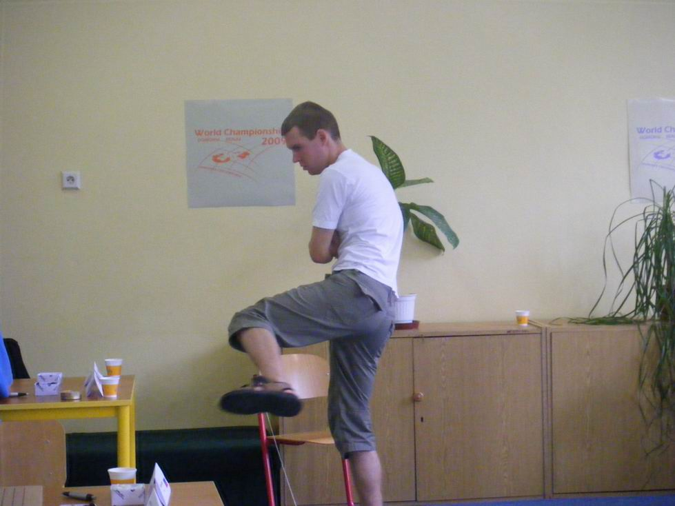
#62 Re:AT第十一轮 作者：松痕 发表时间：2009-8-13 18:07:00
漏杀才好玩呢.#63 Re:AT第十一轮 作者：逆刃 发表时间：2009-8-13 18:08:34
不知道冬瓜算出来没~~#64 Re:AT第十一轮 作者：魔法少年 发表时间：2009-8-13 18:08:35
=======上图对应的爱五子棋谱代码如下，以便你拆解：========
h8h9i9i8k6g8g9f10h10f11g10f12f13f8f9e9e8h11g7j10f7h7g6h5d6c6c7e5d7e7d9
======================================================
黑石步骤
#65 Re:AT第十一轮 作者：失落刀 发表时间：2009-8-13 18:10:14
苏切是汗衫7分裤凉鞋。。。。。。#66 Re:AT第十一轮 作者：松痕 发表时间：2009-8-13 18:12:41
=======上图对应的爱五子棋谱代码如下，以便你拆解：========
h8h9i9i8k6g8g9f10h10f11g10f12f13f8f9e9
======================================================
面对世界冠军,曹冬早已经算出杀了,不过他在验算,心在发抖,最后无法相信世界冠军如此脆弱,结果#######
#67 Re:AT第十一轮 作者：魔法少年 发表时间：2009-8-13 18:21:35
中村要迎来三败了。。。
#68 Re:AT第十一轮 作者：无尽 发表时间：2009-8-13 18:24:08
那要第4名咯~
#69 Re:AT第十一轮 作者：小丸.net 发表时间：2009-8-13 18:29:18

做张图不容易啊，从图片的选择，然后是图片构思，接下来是素材的查找，再到抠图，然后进行整合。。。好歹送个花之类的。
［ 舍露里 于 2009-8-13 18:45:46 时花20金币送鲜花一朵］
#70 Re:AT第十一轮 作者：舍露里 发表时间：2009-8-13 18:29:25
帅帅的andry（蹲点很久才偷拍到的）
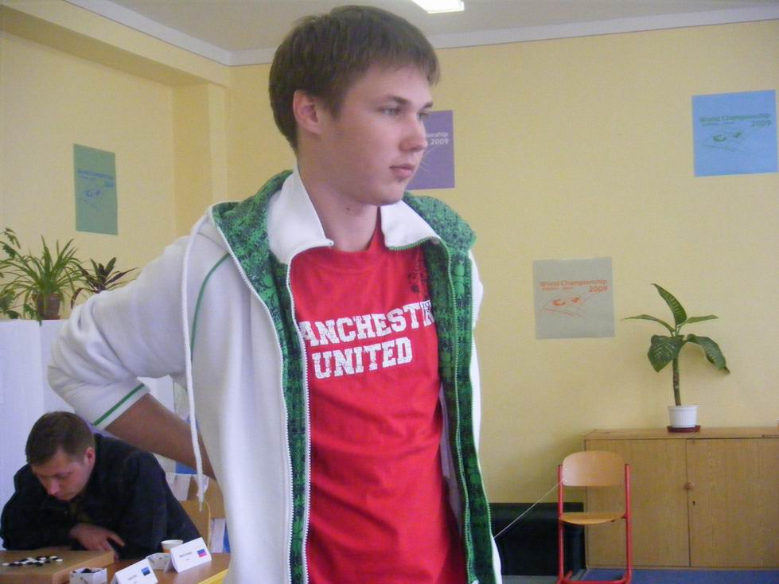
#71 Re:AT第十一轮 作者：舍露里 发表时间：2009-8-13 18:31:50
小丸子。。。。
#72 Re:AT第十一轮 作者：堂堂 发表时间：2009-8-13 18:31:58
andry这次给人印象也很深啊，好象都是把把拿黑攻死对手
#73 Re:AT第十一轮 作者：舍露里 发表时间：2009-8-13 18:33:51
的确很深啊，每场都很帅
#74 Re:AT第十一轮 作者：纳米 发表时间：2009-8-13 18:35:51
69楼太有才了#75 Re:AT第十一轮 作者：舍露里 发表时间：2009-8-13 18:39:26
热爱上镜的冈部
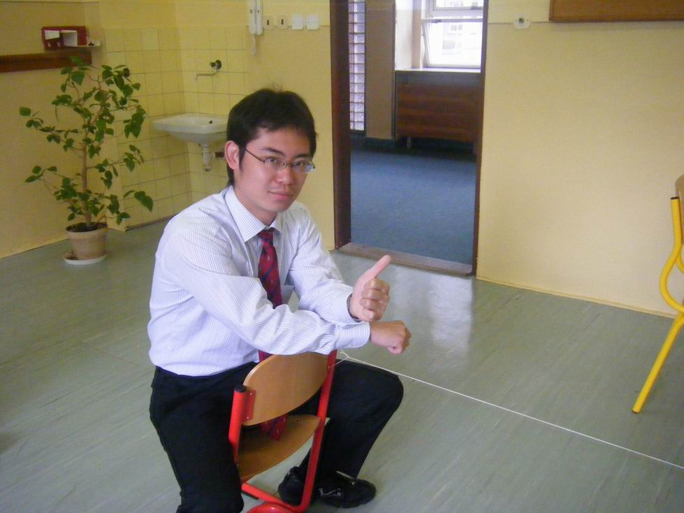
#76 Re:AT第十一轮 作者：舍露里 发表时间：2009-8-13 18:40:25
曹冬和苏切同时拿手托住额头
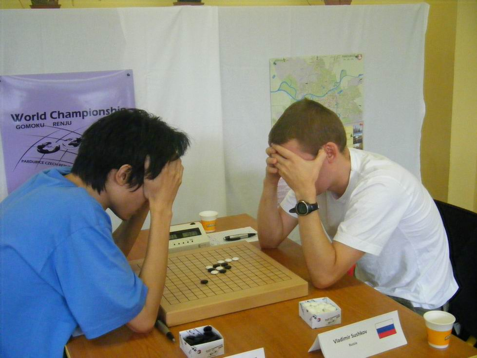
#77 Re:AT第十一轮 作者：舍露里 发表时间：2009-8-13 18:42:07
然后，他们又同时把手放下了
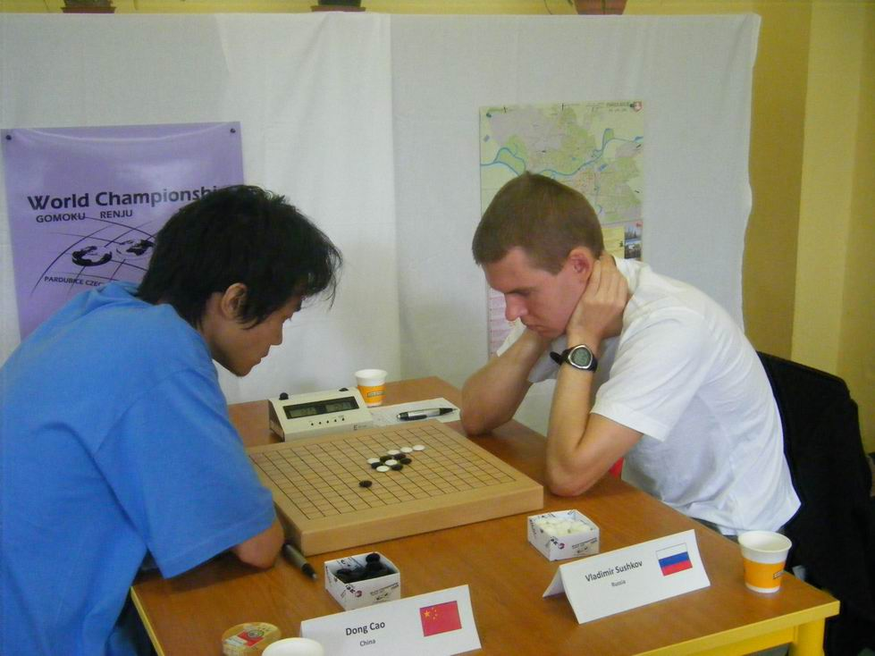
#78 Re:AT第十一轮 作者：舍露里 发表时间：2009-8-13 18:46:21
插播一张台湾棋手卢炜元的GOMOKU的棋
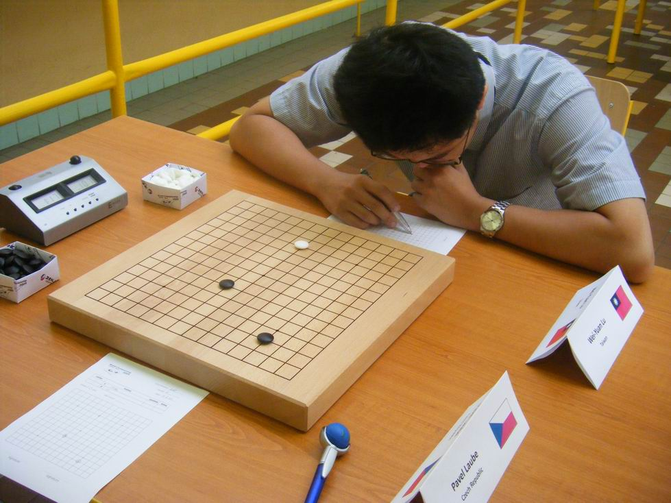
#79 Re:AT第十一轮 作者：土豆 发表时间：2009-8-13 18:55:23
#80 Re:AT第十一轮 作者：屏蔽 发表时间：2009-8-13 18:57:28
于是曹冬最后超过中村了嘛……
他们俩合伙把我完美的预测给咔嚓了……
#81 Re:AT第十一轮 作者：魔法少年 发表时间：2009-8-13 18:57:47
祝贺啊！！！！#82 Re:AT第十一轮 作者：松痕 发表时间：2009-8-13 18:59:10
曹冬赢了.#83 Re:Re:AT第十一轮 作者：nara 发表时间：2009-8-13 19:00:27
引用：这个GOMOKU和简单的无禁有什么区别？棋怎么摆成这样了？能详细说说吗？
原文由 舍露里 发表于 2009-8-13 18:46:21 :插播一张台湾棋手卢炜元的GOMOKU的棋
#84 Re:AT第十一轮 作者：无尽 发表时间：2009-8-13 19:02:12
前三手不限位置 无禁版Sakata
#85 Re:Re:AT第十一轮 作者：nara 发表时间：2009-8-13 19:06:41
引用：也挺有意思的！呵呵！
原文由 无尽 发表于 2009-8-13 19:02:12 :前三手不限位置 无禁版Sakata
#86 Re:AT第十一轮 作者：土豆 发表时间：2009-8-13 19:07:51
曹冬后半程发威，后六轮得了5.5分#87 Re:AT第十一轮 作者：nara 发表时间：2009-8-13 19:07:56
坦克这VCT挺漂亮的！
#88 Re:AT第十一轮 作者：无尽 发表时间：2009-8-13 19:19:28
B组 林皇羽由亚升冠 贺茂雪由冠退亚 殷立成第4
#89 Re:AT第十一轮 作者：雅匪 发表时间：2009-8-13 19:23:19
贺！
#90 Re:AT第十一轮 作者：潇洒 发表时间：2009-8-13 19:24:27
曹冬唯一一次执黑 就赢了。。嘿嘿。。#91 Re:AT第十一轮 作者：水月 发表时间：2009-8-13 19:36:18
最后Sushkov还是差点成了老二#92 Re:AT第十一轮 作者：无尽 发表时间：2009-8-13 19:59:13
大鱼胜#93 Re:AT第十一轮 作者：水月 发表时间：2009-8-13 20:03:37
最后成绩呢？大鱼是第五吧？曹冬第三？su
tunnet
曹冬
中村
鱼
是这样的吧？
#94 Re:AT第十一轮 作者：无尽 发表时间：2009-8-13 20:11:10
苏切 坦克 曹冬 中村 帕克 大鱼
第七名仍争夺中
#95 Re:AT第十一轮 作者：王颢霖 发表时间：2009-8-13 20:16:04
#96 Re:AT第十一轮 作者：水月 发表时间：2009-8-13 20:18:02
一个季军，双人保组，砍了冠军和中村。。。很不错了～#97 Re:AT第十一轮 作者：王颢霖 发表时间：2009-8-13 20:22:15
我觉得客观地反映了国内棋手的实力。老实说，上届吴镝夺冠还是有运气成分，加上我们对规则研究比较透彻。山口规则下对棋手的计算能力有了新的要求，因此冬瓜能进前三还是显示了自身的实力。#98 Re:AT第十一轮 作者：水月 发表时间：2009-8-13 20:27:32
嗯。冬瓜很强大！这次的结果应该说大家都很满意。话说苏切是不是真的遇到极端情况，大分小分相同，和Tunnet那盘赢了所以他是冠军？
#99 Re:AT第十一轮 作者：无尽 发表时间：2009-8-13 20:39:31
中国2、爱沙尼亚2、俄罗斯2、日本1
基本反映了当今世界连珠格局 当然 从人数来说中国最多
当然 从人数来说中国最多
#100 Re:Re:AT第十一轮 作者：无尽 发表时间：2009-8-13 20:49:51
引用：苏切小分比坦克高一点点
原文由 水月 发表于 2009-8-13 20:27:32 :
嗯。冬瓜很强大！这次的结果应该说大家都很满意。
话说苏切是不是真的遇到极端情况，大分小分相同，和Tunnet那盘赢了所以他是冠军？
#101 Re:AT第十一轮 作者：王颢霖 发表时间：2009-8-13 20:58:53
世团赛什么时候举行啊？我看好中国队
#102 Re:AT第十一轮 作者：棋石 发表时间：2009-8-13 21:08:27
还是冬瓜猛，顶~~~
#103 Re:Re:AT第十一轮 作者：屏蔽 发表时间：2009-8-13 22:12:16
引用：
原文由 王颢霖 发表于 2009-8-13 20:58:53 :世团赛什么时候举行啊？我看好中国队
明年 日本
#104 Re:AT第十一轮 作者：笑雨辰 发表时间：2009-8-13 22:29:53
发现花痴一个
#105 Re:AT第十一轮 作者：海月 发表时间：2009-8-13 22:34:25
中国实力还没完全体现出来，明年世团赛如果组一只强队应该夺冠有望
#106 Re:Re:AT第十一轮 作者：菜包先生 发表时间：2009-8-13 22:42:00
引用：
原文由 海月 发表于 2009-8-13 22:34:25 :
中国实力还没完全体现出来，明年世团赛如果组一只强队应该夺冠有望
理想陈容：一台吴镝，二台海月,三台俞满江,四台曹冬,替补:小天,教练:棋情.领队兼直播员:贺加贝
完美...
#107 Re:AT第十一轮 作者：舍露里 发表时间：2009-8-14 5:12:58
这次比赛中国棋手在A组和裸奔差不多。俄罗斯和爱沙尼亚研究却非常的多。一个新月变化能搞吴镝三盘，如果算上这2.5吴镝也9分了。松月对坦克直接一个谱杀。吴镝算4打算对三个。曹冬在最后一轮和苏切的变化完全是强算取胜的。如果这样还认为中国棋手的计算能力不行那不知道哪些是行的了。
闭幕式后聚会和中村聊天，他最近5年在日本国内只输了三次。在世锦赛也输了三次。唯一用黑输的一次就是输给吴镝，而吴镝本来想全部开瑞星的，只是不想过于保守才开花月要求6打，这个花月6打还是和第一个对手安德烈学习的。对中村采用的松月变化干脆是中村发明出来的，这样的如果还是运气那什么样的才叫实力呢？
还有运气成分的问题。任何一个人夺冠都有运气成分。比如苏切对吴镝，俄罗斯人第三次开出新月。如果吴镝会这个变化结果就不言而喻了。
A组整天看前六是一个层次的，任何人都可能夺冠。没有一个人可以对其他棋手说必胜。
［ 有志青年 于 2009-8-14 9:10:36 时奖励此帖[金币加 20 威望加1］
［ 厦门小天 于 2009-8-14 9:25:15 时花20金币送鲜花一朵］
#108 Re:AT第十一轮 作者：水月 发表时间：2009-8-14 9:05:45
曹冬应该1台，另，不知道吴昊为啥不下棋了。。。。。。#109 Re:AT第十一轮 作者：方圆之外 发表时间：2009-8-14 10:25:35
1.任何一个人夺冠都有运气成分。
2。中村。至少从以前到现在。你还是我们心中的神。
3.不管怎样。曹东还是那么强大，实力。对苏切那盘，再次说明，关键时刻，还得靠自身实力。
4。神败了。是神实力减弱了，还是出现了更强的后起者，五子一直在进步着。
5。中国棋手加油。参赛的棋手们加油，能让全世界人看到更精彩的对局。
［ 有志青年 于 2009-8-14 10:44:41 时奖励此帖[金币加 20 威望加1］
#110 Re:AT第十一轮 作者：魔铃 发表时间：2009-8-14 10:48:34
比赛是平时用功积累的回报 研究不也是用功的结果吗 有研究又能在比赛中走出也不是都能做到的啊
#111 Re:AT第十一轮 作者：岳麓小棋皇 发表时间：2009-8-14 10:55:43
 63楼的棋盘好漂亮啊...真想也要一块
63楼的棋盘好漂亮啊...真想也要一块
#112 Re:AT第十一轮 作者：慕容晓文 发表时间：2009-8-14 12:08:21
最近几年中国的五子棋确实发展得非常快……
02-03年，我当时的看法是中国棋手在世界杯A组上最多只能保组，要进前三不太可能
04-05年，我认为中国棋手参加世界杯A组，保组没什么问题，但不太可能进入前三
06-07年，听说蓝鲸参加世界杯，我当时想，如果他运气好，或许能冲进前三……不料却最终夺冠
08-09年，当我知道曹冬和蓝鲸都去世界杯时，我觉得曹冬打进A组没有悬念，两人保组也不存在问题，但要再次夺冠就不太现实了，毕竟这次有中村在。但仍然能在前三有一个名额，非常好！
如果下届比赛能再有2人从QT出线，这样A组就有4个中国棋手了，我觉得夺冠概率会大增……毕竟像ONO，CHEN这样的实在是……不够强（只能这么说）
呵呵~~~
［ 有志青年 于 2009-8-14 12:12:56 时奖励此帖[金币加 20 威望加1］
#113 Re:AT第十一轮 作者：水月 发表时间：2009-8-14 12:50:14
不允许一个国家的棋手在AT里扎堆的#114 Re:AT第十一轮 作者：无尽 发表时间：2009-8-14 12:52:57
国家名额限制最多3个，QT是个人名额，分开的
参加QT本身也有限制，如果一个国家能在AT扎堆，只能说太强了-.-
#115 Re:AT第十一轮 作者：网络连接 发表时间：2009-8-14 14:17:53
不知有没有这方面的明文规定？AT里一个国家最多可以有几个？
#116 Re:Re:AT第十一轮 作者：大元 发表时间：2009-8-14 14:38:05
引用：这个想都别想了，不是那威俱乐部的你再强也别想去了。
原文由 Type 发表于 2009-8-14 12:24:54 :
如果以后中国能多派些强手去参赛，进前3基本可以保证，夺冠希望也很大
#117 Re:Re:AT第十一轮 作者：我怕恋爱 发表时间：2009-8-14 15:35:13
引用：
原文由 舍露里 发表于 2009-8-14 5:12:58 :这次比赛中国棋手在A组和裸奔差不多。俄罗斯和爱沙尼亚研究却非常的多。一个新月变化能搞吴镝三盘，如果算上这2.5吴镝也9分了。松月对坦克直接一个谱杀。吴镝算4打算对三个。曹冬在最后一轮和苏切的变化完全是强算取胜的。如果这样还认为中国棋手的计算能力不行那不知道哪些是行的了。
闭幕式后聚会和中村聊天，他最近5年在日本国内只输了三次。在世锦赛也输了三次。唯一用黑输的一次就是输给吴镝，而吴镝本来想全部开瑞星的，只是不想过于保守才开花月要求6打，这个花月6打还是和第一个对手安德烈学习的。对中村采用的松月变化干脆是中村发明出来的，这样的如果还是运气那什么样的才叫实力呢？
还有运气成分的问题。任何一个人夺冠都有运气成分。比如苏切对吴镝，俄罗斯人第三次开出新月。如果吴镝会这个变化结果就不言而喻了。
A组整天看前六是一个层次的，任何人都可能夺冠。没有一个人可以对其他棋手说必胜。
［ 有志青年 于 2009-8-14 9:10:36 时奖励此帖[金币加 20 威望加1］
［ 厦门小天 于 2009-8-14 9:25:15 时花20金币送鲜花一朵］
实在受不了，比赛结果刚一出来，大家就这么欢呼雀跃的，好像我们有一种被人狂殴然后又反败为胜的喜悦。先提出以下假设：如果比赛是另外两个结果，
1.我们的最强的吴镝和曹冬同学不幸在世锦赛折戟，并未取得好名次，我们会怎么想？会怎么说？会把原因归为客观因素还是主管因素多一点？还是会一边倒的提出批评反思？
2.假如二人分取冠亚军，我们会怎么想？是不是认为中国棋手已经处于世界巅峰水平了？
呵呵，有人会说，你说的这两点都是放P呢，都没有发生的事说这些没有任何意义。这样想的朋友，你们先站墙角呆着反思去吧。
的确，事实是唯一的。但问题是，我们的态度和引起思考的不理性的冲动却不是唯一的！我们的态度和思考角度，往往会因为结果的不同而不同，我们已经失去了标
准。而标准恰恰应该是唯一的。对一个棋界中人来说，不断的反思和总结以突破自我从而向更高的境界发展才是我们唯一的途径。存在于棋手本身的问题，是客观存
在的，不会因为比赛的结果变化而变化，但是一次比赛会把某些问题“暴露”出来，也会把一些问题“掩盖”掉，我们需要的更多的是存在于表象之下的本质！这些
年我们对国内棋手的夸赞和肯定太多了，我们真的爱我们的棋手吗？还是喜欢只沉醉于那些“辉煌”的成绩？有几个人真正的愿意为棋手们分析并指出其弱点和不
足？你也许会说在私下讨论过，但是问题在于：公共的舆论导向往往会决定整个环境的氛围并且对棋手这个群体产生要命的负面影响！我们追求的难道只是比赛中的
“好成绩”？如果A组前6除了曹吴全都不存在是不是我们就可以说我们已经是天下第一了？我们会不会已经满足了？有没有真正反思过自身的不足，想办法突破自己
的瓶颈？想没想过在棋上还有比我们现在的更高的境界（虽然可能这样的人现在还不存在）？我想中村和安度之所以能在那个时代傲然于世，成为天下第一，正是因
为他们不断地反思和突破自我，当他们达到一流水平的时候，他们向自己挑战，因而成为超一流，当他们成为超一流的时候，向自己挑战，因而成为唯一。我们缺乏
向自己挑战的勇气与野心。我在做50步的VCF时，看到论坛上有人说“这根本不是人能做出来的”，“做这样的东西没有任何意义”，这么想的人，你注定不能成为巨
人，尽管你现在也许挺强，但你终究要被我超过。
一个棋手的伟大，不在于纵向的比较，更不在于横向的比较，每个时代都有自己的局限性，而在于能否突破自我，达到自己心中的境界。这就是之所以安度和中
村为什么10年过去依然在人们心中的位置不变的原因。我们可以想象，人类的智商是不断进化的，科技是不断发达的，若干年以后，一个70步的vcf，一个20步的
vct，一个存在必胜型的复杂局面已经可以轻易被棋手算出的时候，他们的理念远远先进于现在的时候，安度和中村依然是连珠界难以望其项背的巨人。我们能不能成
为这样的巨人取决于我们自己。
对舍露里的说法，我想说，这只是偏见，偏见可以有100种，而真理只有1种。当然这不是你的问题，这是多数人的共性。一下针对你的说法提出质疑：
“次比赛中国棋手在A组和裸奔差不多。俄罗斯和爱沙尼亚研究却非常的多。一个新月变化能搞吴镝三盘，如果算上这2.5吴镝也9分了。”分也可以这么算？那上届吴镝用的变化，又该怎么算分？这届所有带有单方性的研究性的对局，干脆咱都重新算一遍分呢？
#118 Re:AT第十一轮 作者：岳麓小棋皇 发表时间：2009-8-14 16:08:14
楼上写了那么多...单立1个帖子供大家讨论比较好吧..#119 Re:AT第十一轮 作者：慕容晓文 发表时间：2009-8-14 18:56:07
诶~~~其实说句公道话，中国的实力已经很强了，只是没有领军人物而已
我们都会认为sushkov是俄罗斯最强，NAKAMURA是日本最强，TAIMLA是爱沙尼亚最强（安度已经淡出），中国呢？无论我说我认为最强的是曹冬或是大鱼，估计都会被砖拍死……何况还有小朱（吴昊已淡出），但从另个角度上讲，也说明了我们的整体实力很强，有点像前些年的围棋……对手只有打不垮的石佛和疯狂的石头，马晓春可以砍遍世界惟独屡次栽于李昌镐，常昊也多次被石佛师徒坏其好事。但现在中国围棋真正强了，为什么？因为有古力……
五子棋也正面临这样的问题，或许我们有很多棋手实力都不弱，但没有一个可以作为代表（代表中国五子棋同样具有超一流的实力），这也是我们的差距
或许蓝鲸（也可能日后另有他人）再得几次冠军或者多次稳定在前三，到这时其它连珠强国才会真正地正视中国五子棋
［ 无尽 于 2009-8-14 19:08:29 时花20金币送鲜花一朵］
十分同意~
#120 Re:AT第十一轮 作者：慕容晓文 发表时间：2009-8-14 18:59:43
上届比赛蓝鲸夺冠固然可喜，毕竟这是冷门
中国棋手要再夺冠……真的很难……
sushkov拿了那么多次亚军才总算熬出头~~~中村、安度继续不参赛，tunnet、sushkov状态一般或许还有希望，QT再进一两个中国棋手，那样可能性将大大提升
#121 Re:AT第十一轮 作者：水月 发表时间：2009-8-14 20:01:10
总之。。。期待下一届吧～顺便期待棋谱～
#122 Re:AT第十一轮 作者：鬼冢弹间 发表时间：2009-8-15 0:44:19
。。。我记得在日本 争夺名额的时候 中村就输了一盘。。 你应该搞错了巴， 连珠这种胜负一线之间的游戏 5年都输不了一盘？ 那只可能他5年只下了几盘。。。#123 Re:AT第十一轮 作者：流逝 发表时间：2009-8-15 7:31:34
这帖真长,看都懒得看。
冬瓜和大鱼都是好样的
#124 Re:AT第十一轮 作者：堇色 发表时间：2009-8-15 16:07:34
很不喜欢看到运气之说
运气+实力=冠军 只有运气没有实力 或者只有实力没有运气 都是拿不到冠军的
还记得奥运会那个老外射击运动员马？
体育竞技 靠的就是实力+运气 也许你实力更高一筹 但是没有那么一点点的运气存在 确实很难拿到好成绩的
赢了一盘两盘 可以说是运气 但是赢了很多 那就是实力 我觉得我们还是很有实力的
#125 Re:Re:Re:AT第十一轮 作者：雅匪 发表时间：2009-8-15 17:44:05
引用：
原文由 我怕恋爱 发表于 2009-8-14 15:35:13 :......
还是多冷静地去思考那些一直存在却未被发现的问题吧。
在缺少自知之明、懈于反思的当下，我们需要如阁下这般的清醒和勤奋！
：）以《反思和总结是我们唯一的途径》为题转至西北狼棋社论坛.说星谝月版块http://xblqs.uueasy.com/thread.php?fid-19.html，有不妥望告知。
#126 Re:AT第十一轮 作者：游戏人间 发表时间：2009-8-15 17:52:07
=======上图对应的爱五子棋谱代码如下，以便你拆解：========
h8h9h7h6g6i8j7g7j5f8e9f7g8i6j6j4i5i7i9h4f6h10e10e7d6f11f9d11c6e6d7g10e12e11g11e8h12f10j8j9b11d5e4i11g9j12
======================================================
假设中村43不防上面。那么结果如图。不要总说中村漏杀，上面局部简明的必胜却视而不见。42本就是为上面的进攻做准备的。先理解了棋局内容再来说吧。
#127 Re:AT第十一轮 作者：游戏人间 发表时间：2009-8-15 18:03:29
回个帖子并不想参与进争吵中去。在中国抨击我和曹冬的人早就已经很多了。可我也没看到哪个能直面站出来的。
只是不太理解为什么当我夺冠的时候就是冷门，侥幸，运气。
当别人夺冠就是实力，众望所归之类的。说到上届比赛我很想问问我下出什么别人不知道的变化了吗？我是用研究取胜的吗？研究用了一次。帕克那盘。我还输掉了。
这次比赛俄罗斯人三次对我用一个变化，如果这个变化我会的话结果是什么样呢？难道这不是一种运气吗？前六苏切赢了4个，中村赢了3个。坦克赢了4个，最后是苏切夺冠。那么他就是实力不是运气了？
中国棋手从未说过自己的计算能力是天下第一的。只说研究能力是天下第一的。而这次的比赛是山口规则，国内的棋手都在准备智力运动会，那个是老的规则。谁有多少精力去分析山口规则呢？而俄罗斯全国锦标赛已经欧洲锦标赛都是山口规则的。在这样一个大的环境下。中国棋手完全是靠计算能力在A组裸奔。这么说有什么问题吗？
顺便透漏下我和中村下的14如果黑控制的好的话白不会有一点机会。
［ 舍露里 于 2009-8-15 18:08:28 时花20金币送鲜花一朵］
［ Type 于 2009-8-15 18:34:20 时花20金币送鲜花一朵］
［ 厦门小天 于 2009-8-16 10:14:30 时花20金币送鲜花一朵］
［ 菜包先生 于 2009-8-16 14:32:22 时花20金币送鲜花一朵］
#128 Re:AT第十一轮 作者：游戏人间 发表时间：2009-8-15 18:05:29
大概世界上没有任何一个国家的棋手在比赛的时候要面对这么多本国的流言蜚语了。很失望，以后不在论坛和大家交流了。再见
#129 Re:AT第十一轮 作者：忧郁的双眼 发表时间：2009-8-15 18:14:34
别介啊偶像 安静两天也别直接离开啊#130 Re:AT第十一轮 作者：南姑钉子户 发表时间：2009-8-15 18:19:08
没得“黑楠”站出来说 你走 我不留 还不及曾哥#131 Re:Re:Re:AT第十一轮 作者：舍露里 发表时间：2009-8-15 18:28:12
引用：
原文由 我怕恋爱 发表于 2009-8-14 15:35:13 :引用：
原文由 舍露里 发表于 2009-8-14 5:12:58 :这次比赛中国棋手在A组和裸奔差不多。俄罗斯和爱沙尼亚研究却非常的多。一个新月变化能搞吴镝三盘，如果算上这2.5吴镝也9分了。松月对坦克直接一个谱杀。吴镝算4打算对三个。曹冬在最后一轮和苏切的变化完全是强算取胜的。如果这样还认为中国棋手的计算能力不行那不知道哪些是行的了。
闭幕式后聚会和中村聊天，他最近5年在日本国内只输了三次。在世锦赛也输了三次。唯一用黑输的一次就是输给吴镝，而吴镝本来想全部开瑞星的，只是不想过于保守才开花月要求6打，这个花月6打还是和第一个对手安德烈学习的。对中村采用的松月变化干脆是中村发明出来的，这样的如果还是运气那什么样的才叫实力呢？
还有运气成分的问题。任何一个人夺冠都有运气成分。比如苏切对吴镝，俄罗斯人第三次开出新月。如果吴镝会这个变化结果就不言而喻了。
A组整天看前六是一个层次的，任何人都可能夺冠。没有一个人可以对其他棋手说必胜。
［ 有志青年 于 2009-8-14 9:10:36 时奖励此帖[金币加 20 威望加1］
［ 厦门小天 于 2009-8-14 9:25:15 时花20金币送鲜花一朵］
实在受不了，比赛结果刚一出来，大家就这么欢呼雀跃的，好像我们有一种被人狂殴然后又反败为胜的喜悦。先提出以下假设：如果比赛是另外两个结果，
1.我们的最强的吴镝和曹冬同学不幸在世锦赛折戟，并未取得好名次，我们会怎么想？会怎么说？会把原因归为客观因素还是主管因素多一点？还是会一边倒的提出批评反思？
2.假如二人分取冠亚军，我们会怎么想？是不是认为中国棋手已经处于世界巅峰水平了？
呵呵，有人会说，你说的这两点都是放P呢，都没有发生的事说这些没有任何意义。这样想的朋友，你们先站墙角呆着反思去吧。
的确，事实是唯一的。但问题是，我们的态度和引起思考的不理性的冲动却不是唯一的！我们的态度和思考角度，往往会因为结果的不同而不同，我们已经失去了标
准。而标准恰恰应该是唯一的。对一个棋界中人来说，不断的反思和总结以突破自我从而向更高的境界发展才是我们唯一的途径。存在于棋手本身的问题，是客观存
在的，不会因为比赛的结果变化而变化，但是一次比赛会把某些问题“暴露”出来，也会把一些问题“掩盖”掉，我们需要的更多的是存在于表象之下的本质！这些
年我们对国内棋手的夸赞和肯定太多了，我们真的爱我们的棋手吗？还是喜欢只沉醉于那些“辉煌”的成绩？有几个人真正的愿意为棋手们分析并指出其弱点和不
足？你也许会说在私下讨论过，但是问题在于：公共的舆论导向往往会决定整个环境的氛围并且对棋手这个群体产生要命的负面影响！我们追求的难道只是比赛中的
“好成绩”？如果A组前6除了曹吴全都不存在是不是我们就可以说我们已经是天下第一了？我们会不会已经满足了？有没有真正反思过自身的不足，想办法突破自己
的瓶颈？想没想过在棋上还有比我们现在的更高的境界（虽然可能这样的人现在还不存在）？我想中村和安度之所以能在那个时代傲然于世，成为天下第一，正是因
为他们不断地反思和突破自我，当他们达到一流水平的时候，他们向自己挑战，因而成为超一流，当他们成为超一流的时候，向自己挑战，因而成为唯一。我们缺乏
向自己挑战的勇气与野心。我在做50步的VCF时，看到论坛上有人说“这根本不是人能做出来的”，“做这样的东西没有任何意义”，这么想的人，你注定不能成为巨
人，尽管你现在也许挺强，但你终究要被我超过。
一个棋手的伟大，不在于纵向的比较，更不在于横向的比较，每个时代都有自己的局限性，而在于能否突破自我，达到自己心中的境界。这就是之所以安度和中村为什么10年过去依然在人们心中的位置不变的原因。我们可以想象，人类的智商是不断进化的，科技是不断发达的，若干年以后，一个70步的vcf，一个20步的
vct，一个存在必胜型的复杂局面已经可以轻易被棋手算出的时候，他们的理念远远先进于现在的时候，安度和中村依然是连珠界难以望其项背的巨人。我们能不能成
为这样的巨人取决于我们自己。
对舍露里的说法，我想说，这只是偏见，偏见可以有100种，而真理只有1种。当然这不是你的问题，这是多数人的共性。一下针对你的说法提出质疑：
“次比赛中国棋手在A组和裸奔差不多。俄罗斯和爱沙尼亚研究却非常的多。一个新月变化能搞吴镝三盘，如果算上这2.5吴镝也9分了。”分也可以这么算？那上届吴镝用的变化，又该怎么算分？这届所有带有单方性的研究
#132 Re:AT第十一轮 作者：慕容晓文 发表时间：2009-8-15 20:57:18
总结一下：一次是冷门，再次就不是了；一次是运气好，再次就不再是运气好了
为什么拜仁夺冠是理所应当的,其它队伍夺冠就是冷门了?凯泽斯劳滕以升班马夺冠,当年的他们不是没有实力,但他们只能做到这一次
为什么拉齐奥夺冠就是冷门？为什么里昂就应当是法甲的班霸？
阿尔克马尔可以28年后再夺冠,但他们下次夺冠要等多久?
切尔西04年的时候时隔50年夺冠让人震惊,05年再次夺冠就不那么令人意外了
阿森纳98年、02年两次夺冠，本赛季再夺冠也不会让人觉得不可思议，反倒是布莱克本，虽然95年夺冠，但若能再次夺冠仍然会让人觉得难以置信
量变引起质变,大家都明白~~~~我想,蓝鲸不用太过不悦~~~~一个棋手的水平在什么层次上,大家都知道,TUNNET03年夺冠,我想即使如今看来这也是一个冷门,但这不妨碍我们认可坦克的实力吧?
如果坦克再次夺冠,我们不会认为是冷门了吧?
很多人说我是高手，其实我很惭愧……虽然全国赛上不止一次获得前三（在我02年才学五子棋的时候就觉得能获得全国赛前三的都是高手），但多年下来，我看到自己心目中的高手不是全国冠军就是世界冠军……而自己到现在还没获得过一个有意义的冠军，所以感觉距离还很远（或许不够努力吧）
［ 无尽 于 2009-8-15 21:10:26 时花20金币送鲜花一朵］
#133 Re:AT第十一轮 作者：慕容晓文 发表时间：2009-8-15 21:43:13
这个世界上，在五子棋界里，真正得到公认的强者其实只有中村和安度两个人，其他人只是在试图去接近他们（先接近他们的现在，再接近他们曾经的最巅峰）
呵呵，可能过于悲观了，希望第三个人能尽快地出现（在中国）……
#134 Re:AT第十一轮 作者：无尽 发表时间：2009-8-15 22:07:09
几大棋类（围棋渐渐也），一枝独秀的时代似乎很难再现了
#135 Re:AT第十一轮 作者：舍露里 发表时间：2009-8-15 23:42:49
随便写几句感想（不针对这篇帖子）
这回跟ANTS聊天，他说他预测大鱼这回的名次在5～7名。就像坦克一样，坦克当年拿完冠军，第二届就立刻拿了第7。因为他们俩夺冠后都会背负沉重的心理压力。但是苏切不一样，苏切之前虽然没有拿冠军，但是总是拿第2，他表现非常稳定。
看了些回帖，感觉主要意思就是说大鱼和曹冬，跟中村和安度不是同个级别的。但是即使跟中村和安度不是同个级别的，他们还是很强，不是吗？
坦克问安茨，为什么这么强的两个棋手才六段。中村输棋后，连说：“世界冠军就是强！”帕克一直很关心地问中国有多少有实力的棋手，中村在一边开玩笑说帕克总会在大赛中落于3个中国棋手后边，另外再落于1个别的棋手后边，所以他总是拿第5。
我想说，我们的两位中国棋手真的是不够理智，太在意别人的看法，在比赛场地也要见缝插针地看论坛上大家说什么。大鱼原定每盘都开瑞星的计划没有实施，就怕被大家说胜之不武。
如果他开瑞星，极端“好运”下，蝉联了世界冠军，我相信大家肯定照样会拍他。而俄罗斯的棋手拿变化胜了大鱼，却不见有人拍。
战胜中村是每个人的梦想，大鱼想战胜他，又怕被别人说是靠研究战胜他，就下了中村最熟的松月，下了中村发明的14。最后终于赢了，可是却不见有多少人为他高兴，拼命从鸡蛋里挑骨头质疑大鱼的实力，或者找各种理由。
有人说对中国棋手一味的赞扬是对棋手的不爱护，可是我看到的情况却相反——赞扬总是吝啬的，质疑总是轻易的。不管内行外行，不管懂不懂一盘棋，总可以轻松地在边上说上几句。
大鱼和曹冬这回虽然没有夺冠，但是他们仍然向世界展示了中国棋手的实力。
评论他们的实力、评论他们的对局是看官们的自由，不过也希望大家能多体谅他们。他们只是普通人，赢棋的时候希望有人为他们喝彩，输棋的时候希望能得到大家的包容。任何一个棋手，更需要的是大家的鼓励，和真正有价值的建议。
两年后，当你出现在AT的赛场时，你会感受到他们感受的压力。当你憋足了劲赢了中村时，你打开爱五子棋，希望看到的同样是迎接你的鲜花和掌声。
（在现场目睹他们背负的沉重压力后的想法）
［ 水月 于 2009-8-16 1:52:15 时花20金币送鲜花一朵］
［ 潇洒 于 2009-8-16 2:04:27 时花20金币送鲜花一朵］
［ 岳麓小棋皇 于 2009-8-16 7:39:03 时花20金币送鲜花一朵］
［ 岳麓小棋皇 于 2009-8-16 7:41:28 时花20金币送鲜花一朵］
［ 无尽 于 2009-8-16 7:59:29 时花20金币送鲜花一朵］
［ Type 于 2009-8-16 8:33:26 时花20金币送鲜花一朵］
［ 小丸.net 于 2009-8-16 9:14:22 时花20金币送鲜花一朵］
［ 厦门小天 于 2009-8-16 9:55:52 时花20金币送鲜花一朵］
［ 我怕恋爱 于 2009-8-16 9:58:47 时花20金币送鲜花一朵］
#136 Re:AT第十一轮 作者：路痴 发表时间：2009-8-16 0:20:06
想给楼上送花....钱不够 先欠着~#137 Re:Re:AT第十一轮 作者：舍露里 发表时间：2009-8-16 1:39:46
引用：
原文由 路痴 发表于 2009-8-16 0:20:06 :
想给楼上送花....钱不够 先欠着~
太感谢了
我不会下棋，所以只能关注些棋外的东西
［ 坏蛋色色色 于 2009-8-21 16:53:18 时花20金币送鲜花一朵］
#138 Re:AT第十一轮 作者：水月 发表时间：2009-8-16 1:55:23
所有人都很了不起:)#139 Re:AT第十一轮 作者：岳麓小棋皇 发表时间：2009-8-16 7:41:16
还欠着...不讲究.我替路痴多送2朵~#140 Re:AT第十一轮 作者：岳麓小棋皇 发表时间：2009-8-16 7:42:13
嘎...我也没金币了...#141 Re:AT第十一轮 作者：无尽 发表时间：2009-8-16 8:06:32
综合我几个帖子发表过的观点：前六的实力都是世界冠军级的 不过以前的中村、安度太一支独秀了，现在比较很难有人做到（包括现在的中村也不是啦~），那个时候既因为他们的才能，也有时代性。现在发展起来了，技术研究成熟了，有实力的人也越来越多了，很难在和他们那个时代比较了~
#142 Re:Re:AT第十一轮 作者：我怕恋爱 发表时间：2009-8-16 9:47:10
引用：嗯，考虑两个原因：1.最近总往医院跑，没时间保证关注和回复。。。2.只是想起到抛砖引玉的作用，引起思考。如果单立的话，怕有人热着脑袋参与“讨论”，未免变成抛砖引“砖”。
原文由 岳麓小棋皇 发表于 2009-8-14 16:08:14 :
楼上写了那么多...单立1个帖子供大家讨论比较好吧..
#143 Re:AT第十一轮 作者：我怕恋爱 发表时间：2009-8-16 9:48:26
按先后顺序，先回应一下吴镝老师。
首先向你道歉，确实我没有很认真的分析这盘棋，最后一轮的棋都是在手机上看的，没有想到46可以必胜。只是简单的看了42你漏杀（也许不是漏杀吧？）和43中村漏防（又也许不是漏防？），确实很草率。
其次，我想只要稍微仔细看一下我的帖子的都能看出来我在针对什么说话，并没有针对你和曹冬老师，我也不认为你夺冠是冷门？谁赢谁输是运气？更没有提到计算与研究啊？还有这次是否“裸奔”我也并不清楚，看了你的留言我更是一头雾水。本人平时没有账号，潜水于各论坛，有这个号以来，大概只发过三次贴，比赛期间也没有讨论什么，因为我不喜欢在没有充分思考后就发言。
最后，我想说的是，你的离去无疑是爱五子棋论坛的一个损失，如果我的帖子在感情上对你造成了伤害，那么我再次道歉。如果有人因此骂我，理解。
补充一下，你说的没有人直面站出来，我粗想一下，大概有至少以下两个原因：1.中国人对“人情”有特殊的理解，而且碍于面子，有些熟悉或认识的人就不愿意站出来说些不好听的话。2.对“权威”的奴性，经常会更喜欢认同那些在专业领域成就更高的人的话，而一些无名小卒的话，往往先入为主地不重视，久而久之一些有想法的人可能也不愿意说出来。如果我是安度，我今天的话一定会引起更多人反思，但仍然是对权威的屈从。
无尽：不是针对这次比赛，这两点我都基本认同，特别第二点，我也曾经想说的，不过后来想了想，还是算了^^
#144 Re:AT第十一轮 作者：我怕恋爱 发表时间：2009-8-16 9:49:57
然后回应舍露里MM，其实看到这个名字的时候觉得真好听，发帖的时候就在想不会是个MM吧？尽量让措辞别那么尖刻，给自己留个余地。。。我不和女人争论。现在有点后悔，到底是冲动了，你真的是个MM。当然我的帖子也不是针对你，只是想引出这个话题，恰好看到你的留言了。
你很诚恳，先赞一个。既然你让我总结一下，只好恭敬不如从命了，其实这个问题以前困扰我好久，想了很长时间，现在稍微有点眉目，总结起来就是：我们的欲求和付出不相衬。我们的付出远不够，我不是指某个人（再强调一下，绝不针对优秀的曹冬和吴镝）。我们渴望他人的认可，也渴望世界连珠界的最高的认可，但是自己本身对连珠却没有应有的虔诚和牺牲。我们的虚荣心太强了。就说到这，不知对你是否有帮助。
#145 Re:AT第十一轮 作者：我怕恋爱 发表时间：2009-8-16 9:52:33
最后。。。一直觉得有个人的something有些问题，其实以前挺想把你当个典型拿出来谈谈的，想不想要啊~~Type老师~？呵呵，后来想想算了，你最多也就那样，无法承载大家的希望，对你没兴趣。
本人对吴镝和曹冬确实没太多想法，相对来说他们已经做的最好。我更关注大环境的作用，更不会因为一次比赛就如何。很希望有一个好的氛围将来能诞生一个像中村和安度一样的棋手，这就是我的初衷。
#146 Re:AT第十一轮 作者：我怕恋爱 发表时间：2009-8-16 9:58:32
哎。。。舍露里MM，你很善良，很感性，很。。女人。是我的帖子写的不好，让你误会了。送你一朵花吧。
#147 Re:AT第十一轮 作者：网络连接 发表时间：2009-8-16 10:04:17
中国的棋手和爱好者当然是支持大鱼和曹冬的,前面论坛多少为他们加油的贴子难道没看到?这次世锦赛多少人第二天上班,但为看比赛还是凌晨3点4点不睡在看他们的棋？大家当然支持中国棋手，即使有很多中村的粉丝，但大家也是支持大鱼曹冬的。
对他们的看法无非就是第一盘和棋有许多意见。他们后来不就是状态出来了吗？这种大赛需要一种临战状态，一种昂扬的斗志，如果第一盘不那么和棋认真下，也许可以早早进入状态，成绩可能比现在的还要好，说不定早早发力，夺冠也有戏~~那样和棋真是令人有点失望的。即便如此，后来大家不还是照样关注他们每一场比赛，为他们加油？
取得这样的成绩本身就是实力的体现，他们的实力相信国内没多少人否认。提起中国高手，大家嘴里说的最多的是谁？
正如前面一位棋手所说，中国高手多，但距离中村安度那样大家公认的高度还没有。还是平下心来，好好下棋是重要的。
#148 Re:AT第十一轮 作者：hgfe 发表时间：2009-8-16 10:11:32
看法不是争论能争的出来的，是长期的思想的结果，想一个朝夕改变不可能，没有人想去恶意的中伤谁，
每个人心中都有自己的“神”， 过多的激烈言语表现可能是大家心中期望的太高了
#149 Re:Re:AT第十一轮 作者：舍露里 发表时间：2009-8-16 10:15:28
引用：
原文由 我怕恋爱 发表于 2009-8-16 9:49:57 :然后回应舍露里MM，其实看到这个名字的时候觉得真好听，发帖的时候就在想不会是个MM吧？尽量让措辞别那么尖刻，给自己留个余地。。。我不和女人争论。现在有点后悔，到底是冲动了，你真的是个MM。当然我的帖子也不是针对你，只是想引出这个话题，恰好看到你的留言了。
你很诚恳，先赞一个。既然你让我总结一下，只好恭敬不如从命了，其实这个问题以前困扰我好久，想了很长时间，现在稍微有点眉目，总结起来就是：我们的欲求和付出不相衬。我们的付出远不够，我不是指某个人（再强调一下，绝不针对优秀的曹冬和吴镝）。我们渴望他人的认可，也渴望世界连珠界的最高的认可，但是自己本身对连珠却没有应有的虔诚和牺牲。我们的虚荣心太强了。就说到这，不知对你是否有帮助。
谢谢，你这么说我就理解了，我想别人也能理解了。
虔诚和牺牲是很伟大的精神，但是在现在的大环境下，很难有棋手能做到完全的牺牲。我们已经有很多棋手为连珠放弃了很多，直到实在不能再放弃的时候才放弃了连珠。他们可能没有最深的虔诚和最大的牺牲，但是他们也渴望、并且值得他人的认可（也许并不是连珠界最高的认可）。
你提出的虚荣心是个很实在的问题，棋手们只有在谦虚地反思自己的不足时才能自我改进。
而我觉得中国的棋手们都不容易，他们对于棋的付出和收获不成正比，所以他们更需要大家的认可和鼓励。
不过我想，我们的出发点都是好的。谢谢你的回答和鲜花。
#150 Re:Re:AT第十一轮 作者：路痴 发表时间：2009-8-16 14:19:09
引用：
原文由 岳麓小棋皇 发表于 2009-8-16 7:41:16 :
还欠着...不讲究.我替路痴多送2朵~
。。。没办法啊 穷人~~
谢~~~~~
#151 Re:AT第十一轮 作者：水月 发表时间：2009-8-16 21:22:55
我发现我还有不少钱。。。。。。#152 Re:AT第十一轮 作者：小丸.net 发表时间：2009-8-16 23:34:21
我有一千七呢,存社区银行里...现在就剩三百了....估计是银行系统出了故障...
#153 Re:AT第十一轮 作者：慕容晓文 发表时间：2009-8-17 1:11:57
其实，是不是靠研究取胜都不重要
比赛重要的就是赢，能赢就是硬道理，竞技体育向来只看结果……
自己的水平在什么层次上，我们每个人都很清楚，不用别人来评估和肯定（休斯顿有个男孩，五音不全照样出唱片，卖得也不错）
如果蓝鲸真像大家说的这样的话，那我觉得他还不够成熟……
马云或者盖茨是不可能因为媒体说几句话就改变公司的整个策略的……
呵呵，不然不会有阿里巴巴和MS了……
无尽：都说到我的心里话了，竞技是只看结果的（特别是比较外行的），所有的一切都是从这里出来，如果中村安度没有那么辉煌的战绩，不可能有那么多他们境界高的评论了，不是吗？后来怎么样影响都不太大了，因为基础很牢固了-.-
［ 无尽 于 2009-8-17 7:28:30 时花20金币送鲜花一朵］
#154 Re:AT第十一轮 作者：须佐能乎 发表时间：2009-8-17 1:32:42
楼上的老师们说了那么多，到底想说明什么观点．不管怎么说，大鱼和冬瓜两位老师，不管成绩怎样永远是我在棋届里最尊敬的两个人！！！相信他们，下一届会给我们带来更多的惊喜．
#155 Re:AT第十一轮 作者：无尽 发表时间：2009-8-17 7:30:37
要做到不去追求结果，不受别人的影响，（一心只着眼于棋上），真的很难，但这恰恰就是大家所喜欢描述的高境界吧 或许更多存在于那些真的仅为乐趣志在参与的人身上了？既有实力又能做到的人恐怕很少吧.. 中村是一个？
#156 Re:AT第十一轮 作者：gigiqi 发表时间：2009-8-18 8:54:17
 大鱼 加油
大鱼 加油
#157 Re:AT第十一轮 作者：思念是凌晨四点蓝 发表时间：2009-8-18 20:20:36
比赛 是结束了 ，看见这么多的意见观点，很意外。
意外的是有很多对他们两人的评击。
10个有9个是垃圾宣言！
站着说话腰不疼！
有本事你去比赛啊！
五子棋本身就艰难起步，还没到普及呢！ 真TM废话一堆！
我们是死在沙滩上的 前浪！！
［ 小丸.net 于 2009-8-18 20:34:07 时花20金币送鲜花一朵］
#158 Re:AT第十一轮 作者：慕容晓文 发表时间：2009-8-18 22:52:26
呵呵，楼上你真是站着说话不腰疼……
你赞助我吧，其实我很想去比赛的……可惜我没钱啊~~~~~
如果你赞助我，我下届比赛肯定去参加（前提是RIFCHINA给我国家名额）
呵呵，如果不差钱的话，我估计世锦赛很快会向全国赛靠拢的……
#159 Re:AT第十一轮 作者：极地剑客 发表时间：2009-8-19 7:45:50
顶楼上.~~~~~~~~#160 Re:AT第十一轮 作者：周光乐 发表时间：2009-8-19 15:04:55
下届比赛在那里比，看样子都很牛，觉得自己很强#161 Re:AT第十一轮 作者：黄色枫叶 发表时间：2009-8-20 11:21:00
164是薛吧，2005年后我记不清你还有什么拿得出手的成绩，不要总是陶醉在过去的成绩中。就算给你国家名额，你也先过了QT再说吧#162 Re:AT第十一轮 作者：黄色枫叶 发表时间：2009-8-20 11:33:02
我觉得在目前的连珠界，ANDO，中村，SUSHKOV可以称得上是最强的，接下来TUNNET，山口，大鱼，曹冬，ANDRY，CHINGIN等在一个水平线上。目前的中国其他棋手中，朱有天分但比较散漫，个人比较喜欢米兰，白痴等低调务实的棋手［ 无尽 于 2009-8-20 11:40:30 时奖励此帖[金币加 20 威望加1］0+1
下届的2个国家名额可以直接进AT啦~~
#163 Re:AT第十一轮 作者：周光乐 发表时间：2009-8-20 19:07:07
我觉得戴晓涵也不错，不过能否在新规则下有所突破还要拭目以待
#164 Re:AT第十一轮 作者：慕容晓文 发表时间：2009-8-20 22:59:09
167楼的，你说错了，我不清楚你是谁，但要搞清楚，我从来没有陶醉在过去的成绩内（05年以前我也没什么拿得出手的成绩，你说05年以后，真是太抬举我了）
2006年我就不下棋了（这点大多数人都知道）……2届全国赛我都没参加
如果没有智运会，我是不会再参加上海以外赛事了（浙江赛除外，离得太近了纯粹当旅游）
再说我有什么样的成绩，和你没有关系……但我相信以你的成绩肯定更没资格来评论我……
最后再说一句，给我国家名额我也不会去，因为我没钱……至于是不是能过QT，我没参加过不能妄下断论……不过我打算2013年向RIF争取国家名额自费去，2011年估计还困难点，呵呵
#165 Re:Re:AT第十一轮 作者：慕容晓文 发表时间：2009-8-20 23:01:20
引用：呵呵，你评价的真好……我觉得RIF应该给你国家名额，让你去打A组，或许成绩会比曹冬好
原文由 黄色枫叶 发表于 2009-8-20 11:33:02 :
我觉得在目前的连珠界，ANDO，中村，SUSHKOV可以称得上是最强的，接下来TUNNET，山口，大鱼，曹冬，ANDRY，CHINGIN等在一个水平线上。目前的中国其他棋手中，朱有天分但比较散漫，个人比较喜欢米兰，白痴等低调务实的棋手［ 无尽 于 2009-8-20 11:40:30 时奖励此帖[金币加 20 威望加1］0+1
下届的2个国家名额可以直接进AT啦~~
#166 Re:Re:Re:AT第十一轮 作者：极地剑客 发表时间：2009-8-20 23:10:15
黄色枫叶肯定是大师级别的噢~
#167 Re:AT第十一轮 作者：慕容晓文 发表时间：2009-8-20 23:13:15
感想同楼上的
希望能在智运会的比赛中遇到他，向他学习一下
几年过去了，外面的世界变化很大，希望枫叶大师不吝赐教
#168 Re:AT第十一轮 作者：周光乐 发表时间：2009-8-20 23:40:50
哈哈，薛老师还是如此低调啊
#169 Re:AT第十一轮 作者：黄色枫叶 发表时间：2009-8-21 11:24:43
哈哈，薛老师激动了，评价一个人的棋力需要很高的资格？我下棋5年，一个人的水平如何大概还是看得出来吧，难不成薛老师把自己当成中村那样的大师了，你下出的棋要等几年别人才能看得透。呵呵，我对薛老师还是有一定的了解的，有时感觉你自我感觉过于良好了。至于我的棋力如何，参不参加智运会与我说的无关吧#170 Re:AT第十一轮 作者：黄色枫叶 发表时间：2009-8-21 11:28:51
中国人对评价事物喜欢讲究一个资格问题，难不成我去饭店吃饭，对老板说：老板，你们这道汤做得有问题啊。老板难不成会说：什么问题呀，有本事你自己做一道出来，看能不能比我们的厨师做得好啊#171 Re:AT第十一轮 作者：无尽 发表时间：2009-8-21 11:29:51
其实这个问题与个人棋力战绩没什么关系哦
#172 Re:AT第十一轮 作者：黄色枫叶 发表时间：2009-8-21 11:56:11
至于说请我赐教，那薛老师不是太抬举我了，假如薛老师不出意料的把我砍了。那薛老师会不屑的说：哼，小子有眼不识泰山，这回知道我的厉害了吧，以后谁还敢说我的不是，这就是下场。假如有那么万分之一的机会，我把薛老师砍了，那我罪过就大了，薛老师高高在上，强大无比的形象岂不是拿来扫地了，哈哈。#173 Re:AT第十一轮 作者：慕容晓文 发表时间：2009-8-21 15:31:17
呵呵，我怎么可能强大无比呢，枫叶大师太抬举我了
我相信一个有能力评价世界杯A组棋手实力在什么层次的人，我是下不过他的，赐教于我是我的荣幸
而且我一向认为，只有强者才有话语权，这点你可以问风尘
如果你在比赛里赢了我，我也一样会敬重你，就像我敬重朱建峰、吴昊、曹冬和吴镝一样，这点你可以问极地
我不习惯在弱者面前保持谦虚的态度，那实在太虚伪。我认为枫叶大师你应该比我强，否则你不会随便评价世界杯A组选手的水平怎么样，但是我不知道你是谁，也不知道你强到什么程度，如果你连智运会都不参加的话，那真是太可惜了……
你参加不参加智运会是没什么关系，但你如果不参加的话，估计我们很难在其它比赛中相遇……我确实很想知道自己和你的差距在哪里，差距到底有多大
一个棋手的实力怎么样，主要还是看战绩，特别是面对顶尖高手的战绩，其实任何运动都是如此。
我觉得很多人评价不是喜欢讲究资格，而是喜欢泛泛而谈，如果你私下里说，那随便你说什么，但要公开场合说的话，我个人建议你最好还是拿出点真凭实据，否则又没有能力，又没有资格，最好不要轻易对一件事情下定论
另外，我赞同你说的，我有时自我感觉过于良好，这点非常正确，但你忘了加对象了！！！！！！
在比我弱的人面前，自我感觉通常都是非常非常非常非常非常非常非常非常非常的好！！！！！！
#174 Re:AT第十一轮 作者：慕容晓文 发表时间：2009-8-21 15:38:50
顺便帮枫叶大师分析一下汤的问题，个人认为大致是以下几种情况：
一，汤确实有问题
1，你指出问题所在，主要目的在于希望饭店能改进
2，你指出问题所在，主要目的在于能扣掉汤的帐款
二，汤其实没有问题
1，你污蔑汤有问题，用意在于想赖帐
2，你并不想赖帐，也并非要污蔑汤有问题，而是你的个人感官出了问题
……
不论哪种情况，你既然指出汤有问题，就肯定要指明问题是什么地方，如果你认为你没有能力指出问题所在，就请有能力的人来证明汤是有问题的。如果纯粹想赖帐而污蔑汤有问题，饭店老板或许会骂你脑子有毛病（你可以去随便哪家饭店试试看，看看结果会怎么样）
#175 Re:AT第十一轮 作者：慕容晓文 发表时间：2009-8-21 16:17:51
记得大约1999年的7月份，我和一个好友一起坐出租车，当时他指出司机开车技术太烂，司机说有本事你来开，好友当场就开了，后来那个司机硬是不肯收我们的车费，临走之前对好友说：谢谢！好友最后实在没办法让司机收钱，便嘱咐了他几句开车时的要诀，他更是激动，他留了好友的电话说以后请他吃饭。
之后也不知道他是不是真的打电话给好友请他吃饭了，但我知道一点，就是司机在好友亲自演示该如何开车之前是很不服气的，但在演示之后就很服气
既然枫叶大师喜欢低调且务实的棋手，那我想你应该也是这样的一个人，而不是只会逞一时的口上之快吧……所以我还是希望枫叶大师能赐教于我，让我了解自己和你这样的高手之间的差距在哪里，差距到底有多少……而不是让我始终苦思冥想（如果你真的确实没有资格参加智运会或者明年的浙江赛A组，那我真的只有再次感到万分遗憾了）
谢谢！！！！！
#176 Re:AT第十一轮 作者：周光乐 发表时间：2009-8-21 16:18:50
薛老师，你不知道他是谁就开火了啊，这样会很被动
#177 Re:AT第十一轮 作者：慕容晓文 发表时间：2009-8-21 16:28:29
……我喜欢和强者对局
只有不断和强者对局才能有进一步的提高
谈不上开不开火，反正上班也很无聊，呵呵
#178 Re:AT第十一轮 作者：我为明子 发表时间：2009-8-21 16:35:46
通过世锦赛，爱五子棋造就了两个人，一个是贺加贝老师，还有一个是薛文熙老师!#179 Re:AT第十一轮 作者：慕容晓文 发表时间：2009-8-21 17:30:30
我上IWZQ也就是这几天的事情，很多年不上论坛了……最近上班实在太无聊了，突然想起IWZQ，所以经常来看看，呵呵
其实大家发表自己的看法，这本身也没什么，大多数评论还是比较中肯的，只是看到有人以居高临下的态度来评论一些棋手，实在让人很难以理解……只能说人多口杂
如果有人说安度、中村和SUSHKOV是这个世界上最强的，我觉得没什么问题，毕竟4次世界冠军获得者，两次世界冠军及N次日本名人的获得者和新科世界冠军并N次获得世界亚军，这些战绩摆在那里，谁都可以说这3个人是最强的，但我不明白的是，凭什么把TUNNET、曹冬、大鱼、PURK等人定位在一个水平上
如果有人妄加断论，我就会提出疑问，他有什么资格把这些人定位在一个水平上；同样，他对我的评价我也要提出疑问，他有什么资格批判我……（高中的时候，我的班主任因为在课堂上批评我且仅靠主观臆断毫无真凭实据，最后被我告到校长那里导致他在全班同学面前向我道歉）
如果中国男足去评价巴西男足，我想很多人会觉得很好笑，道理是一样的……我们都希望中国五子棋的整体水平能提高，但在此之前我们必须对自己有一个清醒的认知。与其避而不见，不如拉出来遛遛
再说，对吴昊、曹冬、吴镝和小朱这4个人，03-06年期间，我总共下了23盘（7成以上是在04和05年），我输了超过5成
所以我对他们很尊重，这是对强者应有的态度……而且我也没看见过他们对世界知名棋手有过怎样的评价（安度、中村除外），我自己也不会这么轻易的公开评价一个棋手的水平怎么样
话说回来，想赢我并且有能力赢我的人很多，我也确实谈不上是什么高手，但有人真正要对我的水平作主观评价的，请在和我对局之后再说……对其他棋手来说也是一样的~~~
论坛是给大家发表言论的地方，只是希望言论要有理，不要乱说
#180 Re:AT第十一轮 作者：小丸.net 发表时间：2009-8-21 19:17:22
薛老师的记忆力确实不错,记得前年,我在我自己的棋谱库里随便找了一张薛老师的棋谱让薛老师认这是那一年对谁的谱,结果,一边认了近七张棋谱,所有的谱全部统一所有都回答无误.....太佩服了...#181 Re:AT第十一轮 作者：卖身打胎 发表时间：2009-8-21 19:42:05
我发的不是贴 是寂寞#182 Re:AT第十一轮 作者：极地剑客 发表时间：2009-8-21 20:08:31
黄老师无敌~~~~~~~~~下棋五年了~太厉害了~偶像~
#183 Re:AT第十一轮 作者：王志伟123 发表时间：2009-8-21 20:17:59
同187楼。#184 Re:AT第十一轮 作者：黄药师 发表时间：2009-8-21 20:36:02
 汗～
汗～
还在磨嘴皮子啊！
#185 Re:AT第十一轮 作者：耳痛 发表时间：2009-8-21 20:37:44
王志伟,你妈妈叫你回家吃饭了,别站在这里围观看热闹了。#186 Re:AT第十一轮 作者：王志伟123 发表时间：2009-8-21 21:42:29
等我有钱的，送耳痛一个鸡蛋吃！#187 Re:AT第十一轮 作者：黄色枫叶 发表时间：2009-8-22 8:13:52
呵呵，半天没来，薛老师都说了这么多了，看得我都有点累，看来我不说几句都有点对不起薛老师的辛勤劳动了。
首先薛老师在帖子中表现出了一种明显的优越感，认为只有强者才能获得尊重，只有强者才能获得话语权和支配感。这话呢看上去也没有错，或者在绝大多数时候是非常正确的。那自认为做为薛老师口中弱者的我对薛老师的话做点分析吧。
我先谈谈我对尊重这个词的理解。具体在社会中，如果我的公司领导是一个有能力，但专横拔扈，不懂得尊重同事和下属，只会以权谋私的人。出于对制度和秩序的尊重，我也会执行他的命令和任务。但一旦他离开他所属的位置，我会把他当成狗屁，或许走在大街上，我都会把他当成路人。但如果我的领导是一个能力出众，且懂得尊重同事和下属，以大局为重的人，我会对他非常尊重。即使哪天他不在那个位置上，我或许也会经常打个电话问候他一下，或者请他出来吃个饭什么的。这是表面上的尊重和实质上的尊重的区别
再具体到棋手，从舍露里对中村的采访中，我看到中村说在山口规则面前他是一个弱者，很多人都强于他，而且希望有更多的年轻人打败他。中村在舍露里面前是绝对的强者吧，但我不认为他的谦虚是一种虚伪，正因为中村对五子棋理解的深度远超常人，他才会表现出对这项运动的敬畏。正如牛顿说过在真理的大海面前我还一无所知。也许现在或再过几年，中村不会象他以前那么强大，会输很多棋或者彻底退出。但一旦提到中村茂这个名字，我都会肃然起敬，这不仅是我对他棋力的认可，更是对他人格的尊重。
再具体到中国五子棋界，那威先生我以前是非常尊重他的，他对五子棋在中国的普及和推广曾经做出了很大的贡献。但最近几年我对他的所做所为有些失望，或者说我不再象以前那么尊重他了。那威先生现在身居高位，在不在乎我们这些无知小民对他的看法我不得而知。
最后具体到我，从我下棋至今，网上网下打败我的何止上千，当然对于有些人我是非常佩服的。但某些强者中自高自大者有之，妄自菲薄者有之，离开了谱软就一无是处着有之，把别人的棋谱换个称呼到处散播者有之。要我去尊重这些人，那TMD真是侮辱了尊重这个词。
薛老师喜欢在你口中称呼的弱者面前自我感觉良好确实不关我什么事，只是有时候让我感觉不太爽，或者在某些有自虐型人格者听起来会很舒服也 未可知
#188 Re:AT第十一轮 作者：黄色枫叶 发表时间：2009-8-22 8:23:58
说到那碗汤的问题，薛老师做了一个逻辑分析。我只是想说明，我有发表言论的权利，不管我说得客不客观，起码我有这个权利。如果我发表了反党反****或攻击他人人身的话题，无尽版主会封了我，我只是对某些棋手的棋力发表了看法。这不是逻辑问题，也不是资格问题，是权利问题。
还有你坐出租车的问题，我只是想说幸亏你的朋友坐的不是飞机，要不然。。。
#189 Re:AT第十一轮 作者：黄色枫叶 发表时间：2009-8-22 8:34:37
至于说到我的评价客不客观，TUNNET做为03世界冠军，05年的第七。07年的第六，09年的第2，大鱼做为07的冠军，09的第六，曹冬第一次参加就获得第3，ANDRY虽然稍差点但也是3界前5。我说他们在一个水平线上还是有事实依据的吧。至于具体到薛老师本人，不管出于什么原因，你05年之后没有什么突出的成绩是事实吧。至于具体证据，我最近没空，不能对薛老师的棋局逐一做出点评。古人有云：不因人而废言。不能因为我是薛老师口中的弱者而认为我说的狗屁不通吧#190 Re:AT第十一轮 作者：黄色枫叶 发表时间：2009-8-22 8:41:45
至于薛老师反复强调的要我赐教的问题。并说如果我打败了你就同样敬重我云云。或许我以后会有幸和薛老师对局，就算我输得再多我也不会轻易改变我的看法，万一侥幸我赢了。我也不敢指望薛老师对我的敬重，那实在是太埋汰我了#191 Re:Re:AT第十一轮 作者：慕容晓文 发表时间：2009-8-22 9:21:15
引用：
原文由 黄色枫叶 发表于 2009-8-22 8:34:37 :
至于说到我的评价客不客观，TUNNET做为03世界冠军，05年的第七。07年的第六，09年的第2，大鱼做为07的冠军，09的第六，曹冬第一次参加就获得第3，ANDRY虽然稍差点但也是3界前5。我说他们在一个水平线上还是有事实依据的吧。至于具体到薛老师本人，不管出于什么原因，你05年之后没有什么突出的成绩是事实吧。至于具体证据，我最近没空，不能对薛老师的棋局逐一做出点评。古人有云：不因人而废言。不能因为我是薛老师口中的弱者而认为我说的狗屁不通吧
好吧，但我还是不明白，依据这些成绩能说明什么问题呢？能说明他们是一个水平上的吗？
呵呵……
你确实有自由发表任何看法，但在公共场合请你尊重客观事实……按照枫叶大师上述言论来看，是不是我在全国赛不止1次进入前三，也可以和自诩为和蓝鲸水平差不多了？甚至可以说比李洪斌更强？这是什么逻辑……
我想枫叶大师，你比赛参加的可能太少了，对比赛的理解可能有点偏差……
我从来没有说枫叶大师是弱者，我一直认为你很强的……只是你太喜欢所谓的低调了，至今避而不见还谈什么输赢。当然我仍然愿意相信你比我强很多，我也从来没有说过你是弱者，是吧？
话说回来，一个连名字都不敢自报的人还说什么呢，呵呵，我向来不喜欢隐身，大多数人只要看过IWZQ的本帖都会知道“慕容晓文”的ID是谁。
暂时我还是把你当强者来看的，因为我不能把一个能轻易定论世界杯A组棋手水平的人当弱者，但如果你再不自报家门的话，我真的只能把你当弱者了，我想论坛上的其他用户也只能把你当弱者了
另外，我相信我朋友如果会开飞机的话，或许某一天他会挽救很多人……不过可惜的是，好象从来没听说过他学过飞行驾驶，貌似飞行驾驶不是想学就能学的……枫叶大师，这是常识，你不知道吗？
#192 Re:AT第十一轮 作者：慕容晓文 发表时间：2009-8-22 9:41:46
我想了又想，你不爽吧？这确实……
我输给吴昊那么多，我也不爽啊，但没办法……谁让他这么强呢？
罗迪克、费雷尔等人也会这么看费德勒的……同理，费德勒也会这么看纳达尔，没办法
如果这样会让你不爽……那我只会更加让你不爽……呵呵
而且你好象理解力有点问题……呵呵，“在弱者面前保持谦虚的态度”和“在记者面前保持谦虚的态度”貌似是两种不同的概念……如果邓加说中国男足很强，巴西队和中国队的比赛要认真对待……不知道大家会怎么理解？
枫叶大师还真是天真啊……
再说，还好你没有对我的对局逐一点评……我为你感到庆幸，我的比赛对局累积下来估摸着也有近千盘了吧……我有很多对局的过程都记不起来了（不过，看到棋谱我能大致记得和谁下的），你要逐一点评，我会感激你的，帮我保存了这么多对局棋谱，我还会请你吃饭……呵呵，你有时间到论坛来发帖还说没时间……真是的，也要找个好点的借口啊
我再想啊，想啊，想啊……枫叶小弟，可能这样的称呼更适合你，呵呵。
别人我不敢说，但我想枫叶小D，你下了5年可能确实未必能看得懂我下的棋，要谈赢我？我觉得你或许连和我对局的机会都没有……因为你总是闭关啊，所以嘛你也没机会输给我啦……这样也不错，或许在你人生临终可以说对***保持不败，对***保持不败，对**保持不败等等，因为根本没有下过嘛！！怎会败呢？
诶~~~没办法，言尽于此，对一个连自己叫什么都不敢公之于众的人，或许只能把这样的人说的话当空气了……
#193 Re:AT第十一轮 作者：轻 发表时间：2009-8-22 12:35:38
很尊敬和崇拜薛老师的棋艺，
同时真的也很欣赏薛老师洒脱的个性。
我也相信薛老师可以赢枫叶老师。
可是我觉得每一个人多有评论的自由！！！胜利者对失败者也应有尊重！！！
而且世上大多评论员都不是高手。写影評不一定要是电影大师。
我也想信我们国家的五子棋实力！！！！！！
大家加油！多是同道中人！
#194 Re:AT第十一轮 作者：黄色枫叶 发表时间：2009-8-22 12:53:51
说到后面，薛老师好象有点逻辑不清，气急败坏的味道，再说下去也没什么意思。能让薛老师这样成熟的人如此有失体面，幼稚的我无地自容啊。好了，最后我想说：薛老师曾经在五子棋中创造过辉煌，也祝愿薛老师在接下来的智运会中一路凯歌高奏#195 Re:AT第十一轮 作者：知易行难 发表时间：2009-8-22 14:02:03
记得有位巴西足球主教练说过:"巴西教练不好当,全巴西人都是足球评论员".按薛老师的说法,这教练应该说:"这全巴西人都不应该评论巴西国家足球,不信让他们出来和我的国脚们对垒,赢了的才有资格评论我的队员的好坏."这成话么?
#196 Re:AT第十一轮 作者：慕容晓文 发表时间：2009-8-22 14:17:03
为什么那么多人都喜欢断章取义，不知道是故意的，还是理解能力有问题……
另外，我虽然下五子棋取得过一些成绩，就像之前说的，要谈到能拿得出手的，实在寥寥无几……更是远远谈不上辉煌
也许是我写的东西让人太难懂了，让某些人觉得逻辑不清……这是我的错，但我无法改正，没办法，人往高处走嘛，呵呵
楼上的，你概念有点混淆……现在有点忙，如果你要我解释一下，你哪里理解错了，等一会我可以帮你分析一下
枫叶小D，或许主观臆断是你的习惯，再加上你理解力不够强，理解问题的方式又有些偏差，所以造成了你下了5年棋，还没取得过像你说的所谓“辉煌的战绩”……但我希望你能正视自己的缺陷，这样才能有进步，呵呵
引用：
原文由 轻 发表于 2009-8-22 12:35:38 :可是我觉得每一个人多有评论的自由！！！胜利者对失败者也应有尊重！！！
而且世上大多评论员都不是高手。写影評不一定要是电影大师。
我也想信我们国家的五子棋实力！！！！！！
大家加油！多是同道中人！
说的没错，但尊重的方式有很多种……
评论员也大多不是高手……但评论员评论的水平是分高低的，高水平的评论员和低水平的评论员的差别在哪里，我想大家应该都很清楚……
如果本身理解力就很有限的人，是做不了高水平评论员的，评论本身是一个行为，既然有人可以提出评论，那自然也可以有人对此评论而作出评论吧？
在我了解的范围内，高段棋手是可以定段的……如果初段棋手去定某些6段、7段甚至段位更高棋手的水平，就让人无法理解了……我的疑问是在于评论中把一些棋手的水平定位的依据……仅此而已，可惜到现在我还是不明白
呵呵，话说回来，枫叶小D似乎确实是无话可说了，那就打住吧，如果枫叶小D对我个人还有什么看法，那就如你说的，把我的棋局逐一点评之后再说吧（我还可以帮你忙，帮我所记得的棋谱发给你，麻烦你了），给我电子邮箱吧，或者QQ也行，真诚希望你能帮我这个忙……
#197 Re:AT第十一轮 作者：失落刀 发表时间：2009-8-22 16:51:43
奉命锁帖，诸位莫怪！